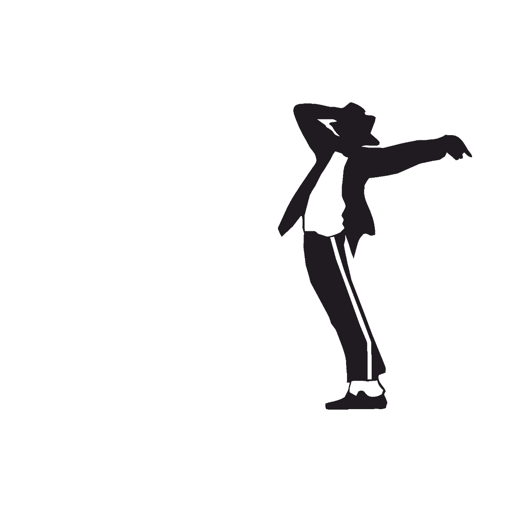

مایکل جوزف جکسون خواننده، ترانهنویس و رقصندهٔ آمریکایی بود. آثار او در موسیقی و رقص در کنار زندگی شخصیاش او را به مدت چهار دهه به یکی از مشهورترین چهرههای فرهنگ عامهٔ جهان تبدیل کرد، به گونهای که از وی بهعنوان یکی از تاثیرگذارترین چهرههای فرهنگی قرن بیستم نام برده میشود. او از 5 سالگی وارد صنعت موسیقی شد و به مدت 45 سال فعالیت کرد. جکسون، بیتلز و الویس پرسلی با اختلاف بسیار زیاد از دیگر هنرمندان، پرفروشترین هنرمندان جهان هستند. در سال 2006 کتاب رکوردهای جهانی گینس، رکورد موفقترین سرگرمیساز و صحنهگردان تاریخ را به نام جکسون ثبت کرد. تاکنون 39 رکورد در گینس به نام وی ثبت شده که بیش از هر هنرمند دیگری است. جکسون در طول 45 سال دوران فعالیتش، 10 آلبوم استودیویی منتشر کرد که 5 تایشان جزو پرفروشترین آلبومهای جهان هستند. او تنها هنرمندیست که این تعداد آلبوم پرفروش دارد. همچنین آلبوم تریلر او که در سال 1982 منتشر شد، با فروش بیش از 110 میلیون نسخه در جهان، پرفروشترین آلبوم تاریخ موسیقیست. طبق بررسیهای تالار مشاهیر راک اند رول، کتاب گینس، مجلهٔ ونتی فر و چندی از منابع دیگر، مایکل جکسون محبوبترین هنرمند تاریخ صنعت نمایش، مشهورترین انسان مَرد تاریخ، نیکوکارترین ستارهٔ پاپ و پرجایزهترین هنرمند جهان است. او بیشتر ثروت خود را برای انجام کارهای نیکوکارانه خرج کرد به طوری که در سال 2000 رکورد «بیشترین حمایت از موسسات خیریه توسط یک ستارهٔ پاپ» در کتاب گینس به نام وی ثبت شد. جکسون در طول عمرش به نمادی فرهنگی و جزئی از فرهنگ عامهٔ مردم جهان تبدیل شد. سبک منحصربهفرد او در موسیقی، رقص، آواز و مُـد، هنرمندان بیشماری همانند مدونا، بریتنی اسپیرز، برونو مارس، لیدی گاگا و جاستین بیبر را در 50 سال اخیر تحت تأثیر قرار داده و همچنان نیز در حال خط دادن به هنرمندان نوظهور است. با این وجود ابعاد دیگر زندگی شخصی او، همچون ظاهر در حال تغییر، رفتار و شایعات پیرامونش سبب ایجاد جنجالهای غرضورزانهای شد که به چهرهٔ مردمی او صدمه زد. از اتهامات معروفی که به وی زده شدهاست میتوان به 2 اتهام کودکآزاری یکی در سال 1993 و دیگری در سال 2005 اشاره کرد که در هر دو مورد بیگناه شناخته شد. او در اواسط سال 2009 بر اثر تزریق بیش از حد داروی قوی بیهوشی پروپوفول توسط دکترش، در سن 50 سالگی درگذشت. پس از گذشت ۲ سال از مرگ جکسون، دکتر او به ۴ سال حبس در زندان به علت قتل غیرعمد جکسون محکوم شد. پس از گذشت بیش از یک دهه از مرگ مایکل جکسون، وی همچنان پردرآمدترین انسان مشهور درگذشتهٔ جهان بودهاست. درآمد جکسون از سال 2009 تا 2019 حداقل دو میلیارد و چهارصد هزار دلار آمریکا برآورد شدهاست.

ماه پیما